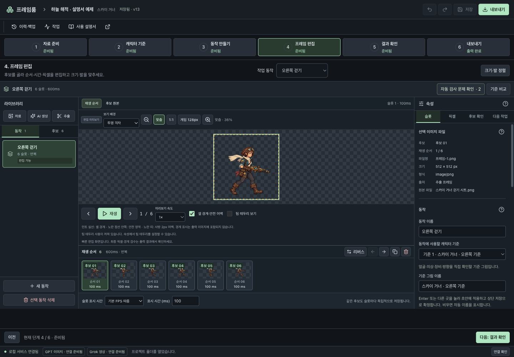
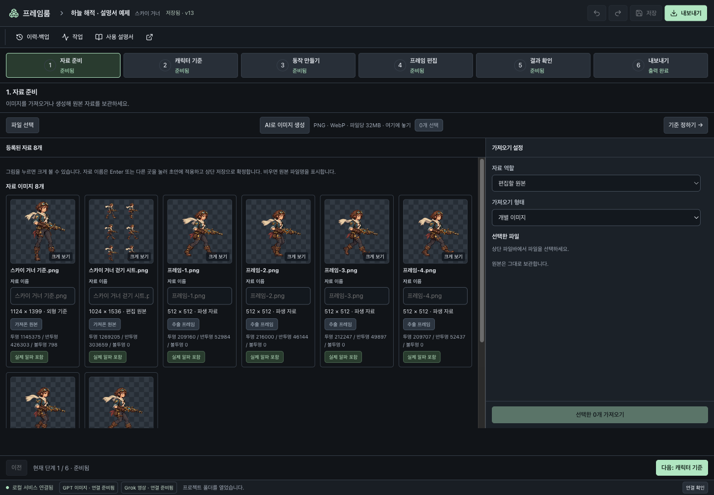
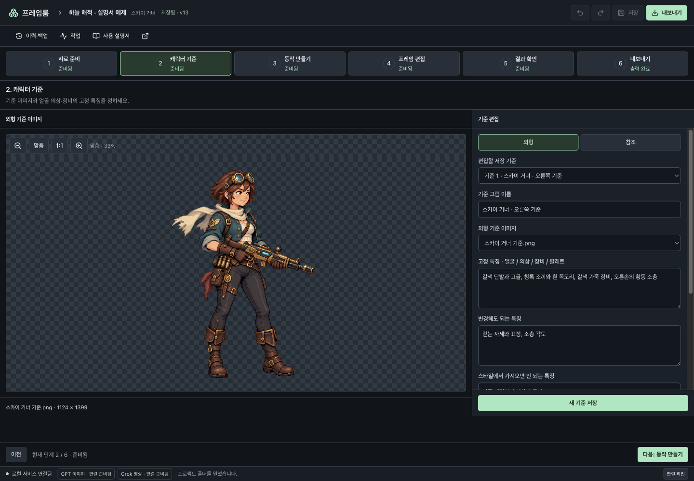
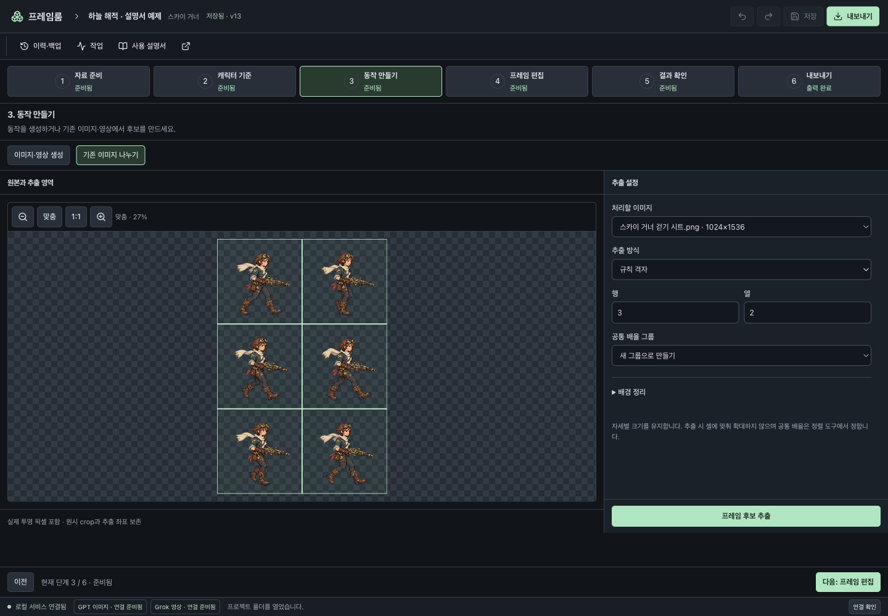
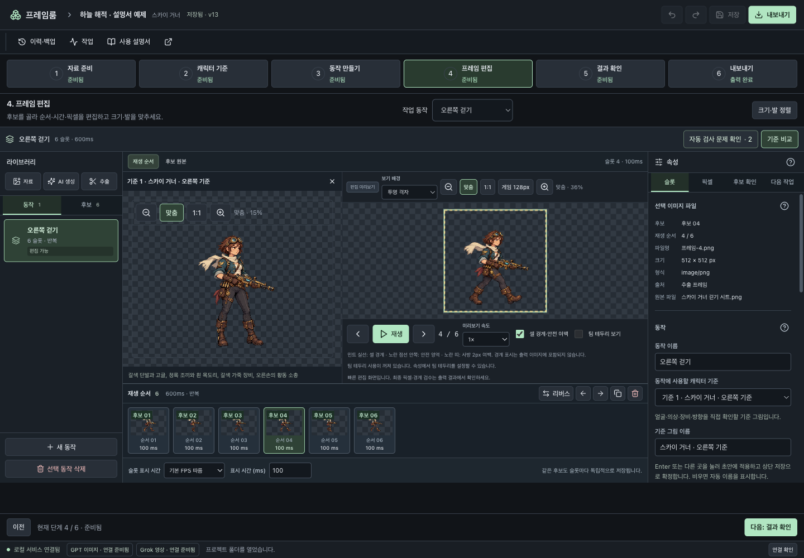
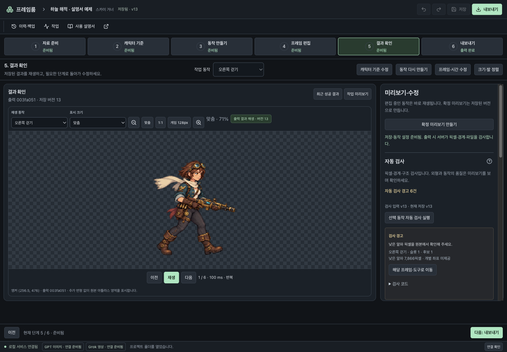
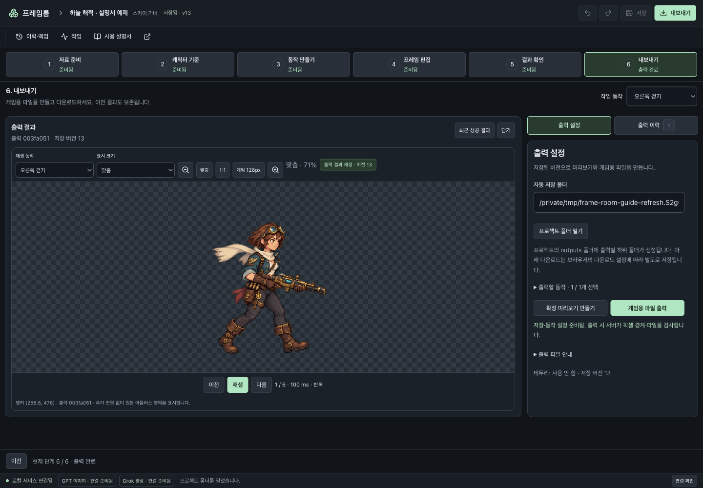

목차에서 바로 찾기
여섯 탭으로 첫 동작을 완성하세요.
자료 준비부터 결과 내보내기까지 현재 제작 흐름을 따릅니다.
자료 준비에서 파일을 등록하고 시작합니다.
캐릭터 기준을 정하고 싶어요 →저장 기준을 고르거나 새 기준을 만듭니다.
새 동작이 필요해요 →저장 기준을 사용해 동작을 만들거나 기존 시트를 준비합니다.
기존 영상이 있어요 →동작 만들기의 영상으로 만들기에서 기존 영상 처리로 후보를 만듭니다.

프레임 편집 탭 왼쪽입니다. 동작과 추출된 후보를 고릅니다. 후보를 확인한 뒤 ‘선택 후보를 순서에 추가’를 눌러야 재생 순서에 들어갑니다. 자료·AI 생성·추출 버튼은 해당 제작 탭으로 이동만 합니다.
1. 라이브러리 / 2. 캔버스 / 3. 재생 순서 / 4. 속성 / 5. 저장·내보내기 / 6. 6단계 제작 탭
자료 준비
프로젝트에 원본 이미지와 시트를 등록합니다.

- 프로젝트 목록에서 새 프로젝트를 만들거나 프로젝트 폴더 열기로 기존 프로젝트를 엽니다.
- 자료 준비 탭 파일바의 파일 선택에서 PNG/WebP를 고릅니다. 오른쪽 가져오기 설정에서 자료 역할과 가져오기 형태를 정한 뒤 선택한 N개 가져오기를 누릅니다.
- 등록된 자료 카드에서 원본 크기, 출처(가져온 원본 등)와 실제 알파 포함 여부를 확인합니다.
캐릭터 기준
생성·비교에 사용할 저장 기준을 고르고 특징을 적습니다.

- 캐릭터 기준 탭의 외형에서 외형 기준 이미지를 고르거나, 편집할 저장 기준에서 기존 기준을 불러옵니다.
- 고정 특징, 변경해도 되는 특징, 가져오면 안 되는 특징과 기준 방향을 적습니다. 스타일·자세 이미지는 참조에서 지정합니다.
- 새 기준 저장을 누릅니다. 상단 저장이나 ⌘/Ctrl + S로는 기준이 만들어지지 않습니다. 기존 기준을 불러와 고쳐도 새 기준 번호로 저장됩니다.
동작 만들기
저장 기준으로 동작을 생성하거나 기존 시트·영상에서 프레임 후보를 만듭니다.

- 새로 생성하려면 이미지·영상 생성 → 이미지로 만들기에서 저장 기준, 동작과 포즈 설명, 요청 프레임 수, 제공자와 모델을 확인하고 새 후보 생성을 누릅니다.
- 이미 준비된 시트는 기존 이미지 나누기에서 처리할 이미지와 추출 방식(예: 규칙 격자 행·열)을 정하고 프레임 후보 추출을 누릅니다. 기존 MP4는 영상으로 만들기의 기존 영상 처리를 사용합니다.
- 결과는 후보 목록에 저장됩니다. 사용할 후보는 다음 프레임 편집에서 고릅니다.
요청 문구, 여기서 시작하세요.
프롬프트와 앱의 ‘요청 프레임 수’를 맞추세요. 지정한 수와 배치대로 생성됐는지는 결과에서 직접 확인하세요.
프레임 편집
후보를 재생 순서에 넣고 시간·크기·발 위치를 맞춥니다.

- 라이브러리의 동작에서 새 동작을 만든 뒤 후보에서 프레임을 골라 선택 후보를 순서에 추가합니다.
- 아래 재생 순서의 슬롯을 선택해 슬롯 표시 시간을 정하고 재생으로 확인합니다. 기준 비교를 켜면 저장 기준과 나란히 봅니다.
- 제목줄의 크기·발 정렬 창에서 공통 배율·셀과 발·루트 앵커를 조정합니다. 편집 초안은 상단 저장으로 확정합니다.
같은 6장, 다른 리듬.
이 시간 체험은 이전 프로젝트에서 내보낸 6프레임을 사용합니다. 현재 영상 걷기의 8장 기본값과 별개입니다. 보간하거나 새 포즈를 생성하지 않습니다. 앱의 ‘미리보기 속도’와 달리 슬롯 시간을 바꾸면 출력 재생 길이도 달라집니다.
결과 확인
저장된 결과를 재생하고 자동 검사 결과를 확인합니다.

- 결과 확인 탭에서 저장된 결과를 재생합니다. 최종 픽셀은 확정 미리보기 만들기로 확인합니다.
- 선택 동작 자동 검사 실행을 누릅니다. 경고마다 해당 프레임·도구로 이동을 눌러 셀 경계·알파·정렬을 점검합니다.
- 고칠 곳이 있으면 제목줄의 캐릭터 기준 수정·동작 다시 만들기·프레임·시간 수정·크기·발 정렬로 돌아갑니다. 이동만으로 생성하거나 데이터를 바꾸지 않습니다.
내보내기
저장된 편집을 출력해 파일과 실제 재생 결과를 확인합니다.

- 미저장 초안과 저장 충돌이 없는지 확인한 뒤 출력 설정의 출력할 동작을 펼쳐 대상을 봅니다. 내보내기 탭을 연 뒤 만든 동작은 기본 포함되고 직접 제외한 동작은 계속 제외됩니다.
- 게임용 파일 출력을 누르고 완료된 출력 결과를 재생합니다.
- 출력 이력에서 atlas.png, runtime.json 등 필요한 파일이나 전체 파일 ZIP을 내려받습니다.
한 단계씩 확인하며 마무리하세요.
이 체크는 설명서 진행 표시이며 앱 데이터나 후보 상태를 변경하지 않습니다. 새로고침하면 초기화됩니다.
이제 편집기에서 이어가세요.
이 설명서의 예제 조작은 실제 프로젝트를 바꾸지 않습니다.